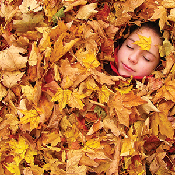
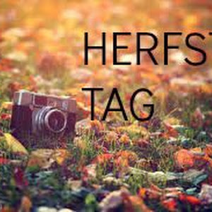

TOOLS Coaching
Mijn angst. Mijn tranen. Mijn twijfel. Mijn wanhoop. Mijn gevoel. Mijn leven. Niemand die het begrijpt. Niemand. Of ja, er is wel iemand. Iemand die precies weet hoe ik me voel. Die begrijpt wat ik bedoel. Zonder iets uit te hoeven leggen. Als ze me alleen al aankijkt, weet ze precies wat er in mijn hoofd om gaat. Mijn blik zegt genoeg, net als die van haar. Er is ook niks dat we niet van elkaar weten. En toch is er iets dat ik haar niet zeggen kan. Mijn angst om haar kwijt te raken. Hoeveel ze werkelijk voor me betekent. Tuurlijk, ze weet dat ik veel om haar geef en dat ze heel belangrijk voor me is. En ze weet ook wel dat ik haar nooit kwijt wil raken. Zij heeft hetzelfde bij mij. Alleen weet ze niet hoe diep mijn angst en mijn liefde voor haar werkelijk gaan. Daarvoor gaat het veel te ver. Het is gewoonweg niet voor te stellen. En ik ben bang om dat kapot te maken door haar de waarheid te vertellen. Want ik weet ook wel dat ik eigenlijk wat afstand moet nemen. Maar ik kan dat gewoon niet. Nu nog niet.
Read more

Herfst 1
Mijn angst. Mijn tranen. Mijn twijfel. Mijn wanhoop. Mijn gevoel. Mijn leven. Niemand die het begrijpt. Niemand. Of ja, er is wel iemand. Iemand die precies weet hoe ik me voel. Die begrijpt wat ik bedoel. Zonder iets uit te hoeven leggen. Als ze me alleen al aankijkt, weet ze precies wat er in mijn hoofd om gaat. Mijn blik zegt genoeg, net als die van haar. Er is ook niks dat we niet van elkaar weten. En toch is er iets dat ik haar niet zeggen kan. Mijn angst om haar kwijt te raken. Hoeveel ze werkelijk voor me betekent. Tuurlijk, ze weet dat ik veel om haar geef en dat ze heel belangrijk voor me is. En ze weet ook wel dat ik haar nooit kwijt wil raken. Zij heeft hetzelfde bij mij. Alleen weet ze niet hoe diep mijn angst en mijn liefde voor haar werkelijk gaan. Daarvoor gaat het veel te ver. Het is gewoonweg niet voor te stellen. En ik ben bang om dat kapot te maken door haar de waarheid te vertellen. Want ik weet ook wel dat ik eigenlijk wat afstand moet nemen. Maar ik kan dat gewoon niet. Nu nog niet.
Met deze hitte is het al lastig om ook maar een enkele volzin uit je mond te krijgen zonder buitenproportioneel te gaan zweten, laat staan creatief te zijn… Toch wordt er van je verwacht dat je iedere dag briljante, fantasierijke, baanbrekende en fenomenale dingen uitpoept. Dat zit niet altijd in de grote zaken, maar juist in de dagelijkse klussen als echt pr pro zoals het schrijven van een persbericht. Deze dingen zijn van zichzelf al saai genoeg, maar nog steeds een belangrijk onderdeel van ons vak. Hoe houd je die fris en fruitig? 6 basics om die crea mojo naar boven te halen.
Read More

herfst 2
Met deze hitte is het al lastig om ook maar een enkele volzin uit je mond te krijgen zonder buitenproportioneel te gaan zweten, laat staan creatief te zijn… Toch wordt er van je verwacht dat je iedere dag briljante, fantasierijke, baanbrekende en fenomenale dingen uitpoept. Dat zit niet altijd in de grote zaken, maar juist in de dagelijkse klussen als echt pr pro zoals het schrijven van een persbericht. Deze dingen zijn van zichzelf al saai genoeg, maar nog steeds een belangrijk onderdeel van ons vak. Hoe houd je die fris en fruitig? 6 basics om die crea mojo naar boven te halen.
De echte taalpurist, krijgt nu direct vlekken in z’n nek, slaat rood aan en als hij niet al aan het zweten was, dan kwam de stoom inmiddels echt wel uit zijn oren. Die wil hier namelijk geen woord van weten: spreektaal. Bah! Maar we leven in een tijd waarin spreektaal mag. –jeeeeej-. Informeel taalgebruik kan een boodschap evengoed overbrengen als formeel taalgebruik. Sterker nog. Soms zelf beter. Een gortdroog lifestyle bericht pitchen in praktisch oud-Nederlands? Niet zo heel passend, behalve wanneer je hiermee juist een statement wilt maken. Luchtig zijn mag en maakt het echt niet direct een houtje-touwtje bericht.
Read more

Herfst 3
De echte taalpurist, krijgt nu direct vlekken in z’n nek, slaat rood aan en als hij niet al aan het zweten was, dan kwam de stoom inmiddels echt wel uit zijn oren. Die wil hier namelijk geen woord van weten: spreektaal. Bah! Maar we leven in een tijd waarin spreektaal mag. –jeeeeej-. Informeel taalgebruik kan een boodschap evengoed overbrengen als formeel taalgebruik. Sterker nog. Soms zelf beter. Een gortdroog lifestyle bericht pitchen in praktisch oud-Nederlands? Niet zo heel passend, behalve wanneer je hiermee juist een statement wilt maken. Luchtig zijn mag en maakt het echt niet direct een houtje-touwtje bericht.
Uitgebreide uitleg of anekdote? De keuze is snel gemaakt. Direct beginnen met de inhoud of eerst even geprikkeld worden met een hilarisch, aansprekend of herkenbaar voorbeeld? Anekdotisch vertellen wordt steeds belangrijker, maar slechts enkelen kunnen het echt goed. Ben je echt helemaal vastgeroest of bezit je helaas niet de natuurlijke aanleg om briljante verhalen te (re)produceren? Dan is het een kwestie van oefenen, oefenen en oefenen. Niet weten waar te beginnen? Lees dan toch eens het boek van de Heath Brothers ‘Made to Stick’. Niet het meest nieuwe boek, maar zeker relevant. Het origineel leest wel een stuk prettiger dan de vertaling.
Read More

herfst4
stukje tekste over een herfst foto 4